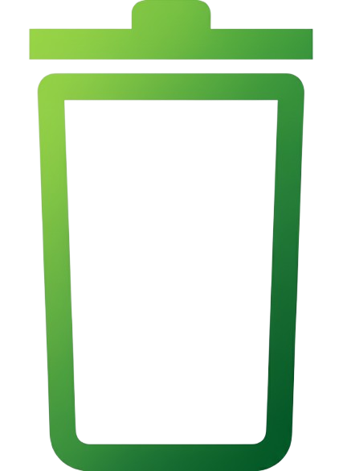

⚠️ Tong Sampah Kayangan sudah penuh (100%)!
⚠️ Tong Sampah Nirmala sudah penuh (100%)!
Kayangan

Penuh 100%
Nirmala
Penuh 100%
Grafik Harian
Tidak ada data yang ditampilkan.
Gunakan filter waktu dan kode tong untuk memuat data.